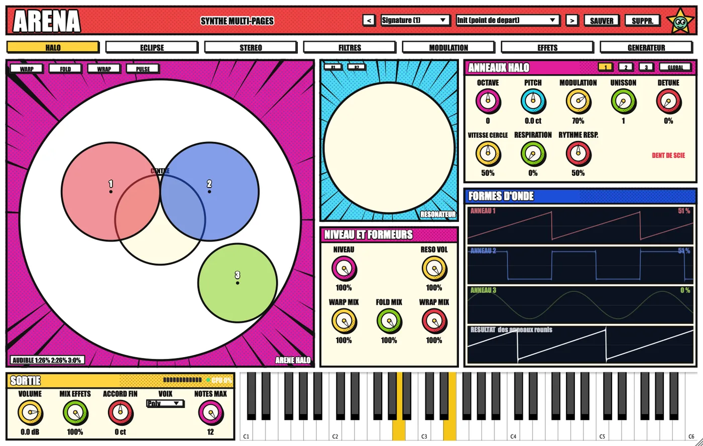

Arena
Tout BrickS dans un seul synthé : deux moteurs à anneaux, un double filtre en arène de billes, des enveloppes et des LFO qu’on dessine.

Le son
Ce que ça change dans votre morceau
Arena réunit les deux synthés à anneaux de la gamme dans le même instrument : un moteur à trois anneaux (dent de scie, carré, sinus, modulés en anneau) et un moteur FM à quatre opérateurs, qui jouent côte à côte à chaque note. Vous dosez l’un par rapport à l’autre, chacun avec son arène et ses cercles d’effet.
La grande idée, c’est le filtre : chaque filtre est une arène. Un tube représente tout le spectre, une grosse bille le bouche, une autre isole une tranche, trois petites résonnent. On filtre en déplaçant des billes, avec vingt couleurs de résonance au choix. Sept pages, chacune dédiée à un rôle, et un générateur de patchs pour partir d’une base.
Trois points forts
Deux moteurs en un
Anneaux d’un côté, FM de l’autre, chacun avec ses réglages, pour des sons qu’aucun des deux ne ferait seul.
Un filtre qu’on voit
Des billes dans un tube : on bouche, on isole, on fait résonner, avec vingt couleurs de résonance.
Tout se dessine
Quatre enveloppes et quatre LFO au tracé libre, plus une matrice pour les routages précis.
Mode d’emploi
Comment l’utiliser
Commencez par la page du générateur pour tirer un patch, puis ouvrez la page des filtres pour le remodeler en déplaçant les billes. Ajustez le niveau entre les deux moteurs, puis passez à la page de modulation pour dessiner une enveloppe ou un LFO.
Les six effets en rack (chorus, délai, intervalles, bande magnétique, bitcrusher, réverbe) sont visibles d’un coup d’œil à la dernière page. Le limiteur de sortie baisse le gain avant les pics : on peut jouer des accords et monter les effets sans craquement.
Des idées pour démarrer
- Basse 808 hybride : moteur FM en octave basse, moteur à anneaux au-dessus, filtre qu’on ferme à la bille.
- Pad d’ambiance : stéréo élargie sur chaque moteur, LFO dessiné lent sur la coupure.
- Lead agressif : fold sur le moteur à anneaux, bitcrusher en fin de chaîne.
- Pluck de boom bap : enveloppe 2 dessinée à la main sur la coupure, bande magnétique.
Les réglages
Ce que fait chaque réglage
- Niveau des moteurs
- Dose le moteur à anneaux par rapport au moteur FM.
- Stéréo par moteur
- Dix modes : sec, fréquence, élargir, harmoniques, nuage, bandes, et quatre modes d’unisson stéréo.
- Billes des filtres
- Une grosse bille bouche le spectre, une autre isole une tranche, trois petites résonnent.
- Couleur de résonance
- Vingt styles (verre, eau, métal, voyelle, grondement, soie…) pour le caractère du pic.
- Routage des filtres
- Série, parallèle ou séparé : chaque moteur peut avoir son filtre.
- Enveloppes et LFO
- Quatre de chaque, au tracé libre, avec une destination choisie parmi un grand nombre.
- Voix
- Polyphonie, mono (toutes les voix empilées sur une note) ou duo.
- Générateur de patchs
- Quatorze encodeurs pour doser ce que vous cherchez ; il fabrique un patch et apprend de ce que vous gardez.
Pour qui
Quand le sortir
Pour les producteurs qui veulent un instrument de sound design complet : basses, textures, leads et nappes dans un seul plug-in, avec la profondeur nécessaire pour y rester des heures.
Fiche technique
- Formats
- Audio Unit, VST3
- Système
- macOS, Apple Silicon et Intel
- Entrées / sorties
- Entrée MIDI, sortie stéréo
- Polyphonie
- 12 voix, ou mono, ou duo
- Latence
- Courte : 2,2 ms, déclarée à l’hôte (limiteur à anticipation)
- Pages
- Sept : générateur, Halo, Eclipse, stéréo, filtres, modulation, effets